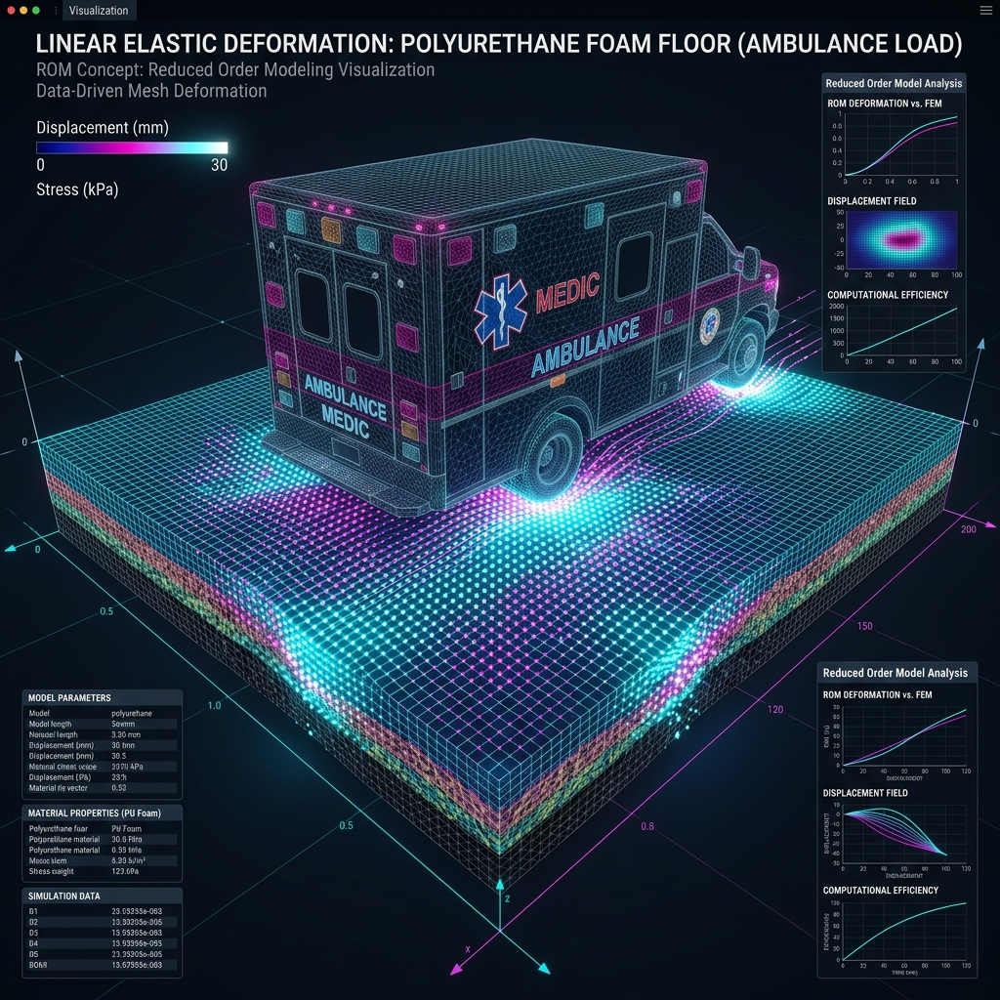

This project explored Reduced Order Modeling (ROM) techniques to simplify and accelerate complex numerical simulations related to linear elasticity and data-driven physics modeling.
I successfully applied POD-Galerkin and Singular Value Decomposition (SVD) methods to compress high-dimensional physics simulations into lightweight models without losing significant accuracy. This was demonstrated by efficiently simulating a playground floor's linear elastic deformation under the weight of an ambulance and assessing dynamic load safety for a stunt facility.
View on GitHub